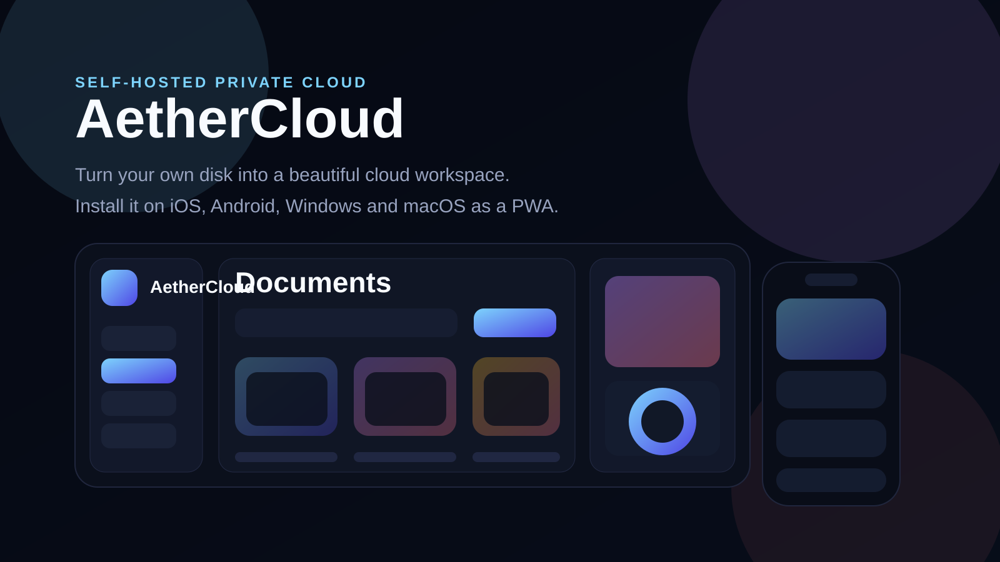

GitHub Pages Ready
Run a private cloud from your own disk.
AetherCloud is a self-hosted Flask app with a polished storage UI, installable PWA shell, Docker deployment and a workflow centered on your own Windows drive or attached disk.
MIT licensed. GitHub Actions can test the app and publish this page automatically.

What You Get
Storage, installability and clean self-hosting in one repo.
Self-Host Model
Point the app at your own storage path and expose it only how you want.
E:\AetherCloudData, a mounted volume or any server path you trust.
Quick Start
Run locally or with Docker.
python -m venv .venv
source .venv/bin/activate
pip install -r requirements.txt
export AETHER_STORAGE_DIR="/Volumes/AetherDrive/storage"
python AetherCloud.pycp .env.example .env
docker compose up -d
# Default volume
./data:/data
# Windows disk example
E:/AetherCloudData:/dataRepository Note